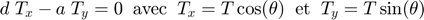
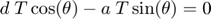
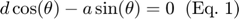
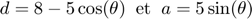
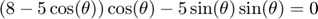
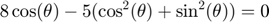
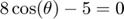
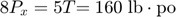
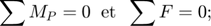
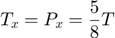

Problème 2/41, Meriam p. 45

Contents
Démarche scalaire
Moment Mc – comme il s'agit d'une corde, le bras de levier est toujours égal à 5 po.
clear; clc d = 5; % po (bras de levier) T = 32; % lb (Norme de T) Mc = T * d; fprintf('Norme de Mc = %.0f lb·po',Mc); fprintf(' dans le sens antihoraire\n');
Norme de Mc = 160 lb·po dans le sens antihoraire
Calcul de l'angle thêta

Appliquer le théorème de Varignon au point P :



Considérer le triangle jaune :

Substituer ce résultat dans l'équation (1) :



theta = acosd(5/8);
fprintf('Angle theta = %.1f°\n',theta);
Angle theta = 51.3°
Aspect physique
Il n'y a pas de rotation, car le disque est immobile.
Le moment Mc génère une force de contact Px au point P. Comme le disque ne bouge pas, la force Px annule le moment Mc.
La force Py provenant de la masse du disque n'entraîne pas un moment au point C.


Comme le disque ne bouge pas (il ne glisse pas et ne tourne pas), la force Px doit être équivalente et de sens contraire à la composante en x de T, soit Tx. Au point P :


theta = acosd(5/8); % thêta = acosd(Tx/T) = acosd( (T*5/8)/T ) fprintf('Angle theta = %.1f°\n',theta);
Angle theta = 51.3°
Note – le frottement est suffisant au point P pour maintenir l'équilibre statique du disque.